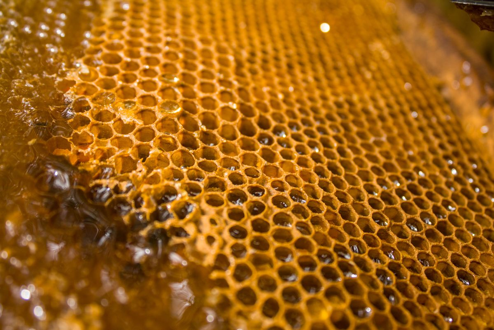
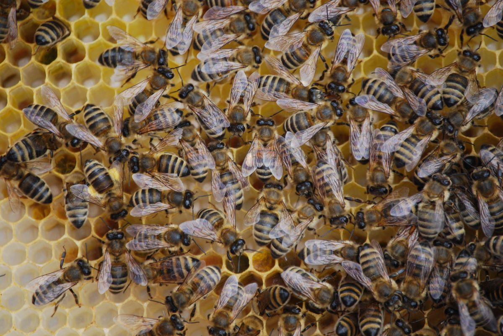
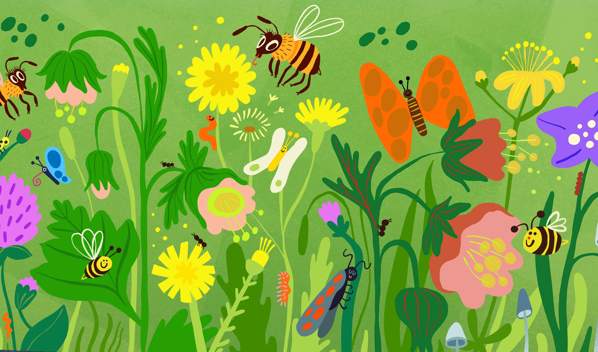
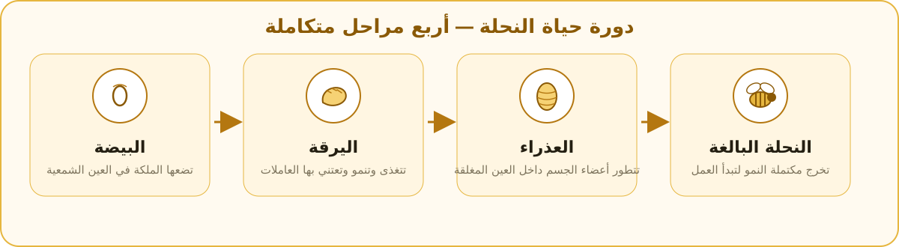
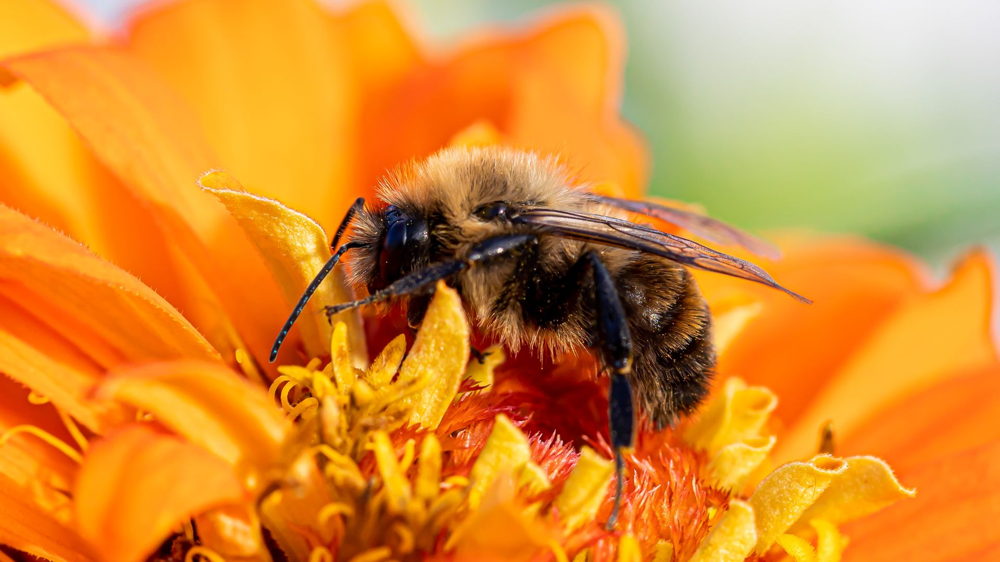

الملكة
- الأنثى الأساسية المسؤولة عن وضع البيض.
- توجد عادة ملكة واحدة في المستعمرة.
النحل من الكائنات الصغيرة التي تلعب دورًا كبيرًا في الطبيعة
فهو لا ينتج العسل فحسب، بل يساعد النباتات على التكاثر ويحافظ على التوازن البيئي. هيا نكتشف معًا أسرار هذا العالم المدهش!
أرقام سريعة عن عالم النحل



النحل حشرات طائرة تنتمي إلى رتبة غشائيات الأجنحة، ويتميز بجسمه الصغير وأجنحته ووجود شعيرات تساعد بعض أنواعه على جمع حبوب اللقاح.
تتكون مستعمرة نحل العسل من ثلاثة أنواع رئيسية، لكل منها دور واضح في حياة الخلية.
تمر النحلة بأربع مراحل أساسية خلال نموها، تتكامل في كل منها أعضاء جسمها.
تبدأ حياة النحلة داخل البيضة التي تضعها الملكة في العيون الشمعية.
تخرج اليرقة وتتغذى وتنمو، وتعتني بها العاملات طوال هذه المرحلة.
تبدأ أعضاء جسم النحلة بالنمو والتطور داخل العين الشمعي المغلق.
تخرج نحلة مكتملة النمو لتبدأ العمل داخل الخلية وخارجها.

يمر إنتاج العسل بعدة خطوات دقيقة، من زهرة إلى عين سداسية في قرص شمعي.
تجمع النحلات رحيق الأزهار.
تنقل الرحيق إلى الداخل.
تعالجه إنزيمات النحل وتساعد حركة أجنحته على تقليل الماء فيه.
يُخزّن العسل في العيون السداسية داخل الأقراص الشمعية.
العسل غذاء طبيعي ينتجه النحل من رحيق الأزهار، ويتميز بمذاقه الحلو واحتوائه على مجموعة من المركبات الغذائية المفيدة.
يحتوي العسل على سكريات طبيعية تمد الجسم بالطاقة.
قد يساعد العسل على تخفيف السعال، خاصةً عند الإصابة بنزلات البرد.
يحتوي على مركبات تساعد في حماية خلايا الجسم من الإجهاد التأكسدي.
يمتلك خصائص تساعد على الحد من نمو بعض أنواع البكتيريا.
يُستخدم العسل الطبي المعقم في بعض الضمادات للمساعدة في التئام الجروح.
قال تعالى: ﴿فِيهِ شِفَاءٌ لِّلنَّاسِ﴾، ففيه منفعة وبركة للإنسان.
معلومة مهمة: العسل غذاء مفيد، لكنه يحتوي على نسبة مرتفعة من السكريات، لذلك يُستهلك باعتدال، ولا يُعطى للأطفال دون عمر سنة.
ذكر الله سبحانه وتعالى النحل في القرآن الكريم، وخصص له سورة كاملة باسم سورة النحل، وهي السورة السادسة عشرة في القرآن الكريم.

سُميت بهذا الاسم لورود ذكر النحل فيها، وبيان ما في خلقه من دلائل قدرة الله. وتدعونا الآيات إلى التأمل في دقة خلق النحل وطريقة حياته وما ينتج عنه من منافع، لندرك عظمة نعم الله علينا.
يمكن تقسيم المعاني إلى أربعة معانٍ واضحة:
﴿أَنِ اتَّخِذِي مِنَ الْجِبَالِ بُيُوتًا وَمِنَ الشَّجَرِ وَمِمَّا يَعْرِشُونَ﴾ — أرشد الله النحل إلى اتخاذ بيوت في الجبال والأشجار وما يبنيه الناس.
﴿ثُمَّ كُلِي مِن كُلِّ الثَّمَرَاتِ﴾ — إشارة إلى غذاء النحل واعتماده على الأزهار والثمرات.
﴿يَخْرُجُ مِن بُطُونِهَا شَرَابٌ مُّخْتَلِفٌ أَلْوَانُهُ﴾ — شراب يخرج من بطون النحل، وتتنوع ألوانه بحسب مصادر الرحيق.
﴿فِيهِ شِفَاءٌ لِّلنَّاسِ﴾ — بيان ما جعل الله في العسل من فوائد وخصائص نافعة للإنسان.
النحل من أهم الملقحات في الطبيعة، ولولاه لقلّت ثمار كثيرة وتعطلت سلاسل غذائية بأكملها.
ينقل حبوب اللقاح بين الأزهار، فيساعدها على إنتاج الثمار والبذور.
يدعم نمو الأزهار والنباتات التي تعيش عليها كائنات أخرى.
يساهم في استمرار الدورة الطبيعية للحياة في الحدائق والبراري.
كثير من الفواكه والمحاصيل تعتمد على تلقيح النحل لتنمو.
حقائق صغيرة تكشف مدى دقة هذا المخلوق العجيب.
للنحلة عينان مركبتان وثلاث عيون بسيطة تساعدها على الاستدلال بالضوء.

يمكن للنحلة الطيران بسرعة تقارب 24 كيلومترًا في الساعة.
تحافظ العاملات على حرارة الخلية لتقارب 35 درجة مئوية لتربية الصغار.
ترقص النحلة العائدة لتخبر زميلاتها باتجاه الرحيق ومسافته.
عند تخزينه بشكل صحيح، يمكن أن يبقى العسل صالحًا لزمن طويل جدًا.
قد تضع الملكة آلاف البيضات يوميًا في موسم النشاط.
يمكن لكل منا أن يساهم بحماية النحل بخطوات بسيطة في حياته اليومية.
ازرع أزهارًا ونباتات تجذب النحل وتوفر له الرحيق.
حافظ على الحدائق والمساحات الخضراء في مدينتك.
تجنب الاستخدام العشوائي للمبيدات التي تضر بالنحل.
حافظ على البيئات الطبيعية التي يعيش فيها النحل.
تعرفنا في رحلتنا على عالم النحل، وطريقة حياته، وأهمية دوره في تلقيح النباتات وإنتاج العسل. لنتذكر دائمًا أن حماية النحل تعني المساهمة في حماية الطبيعة والحفاظ على توازنها.
وفي ختام رحلتنا في عالم النحل، اكتشفنا أن هذا المخلوق الصغير يحمل أسرارًا عظيمة، وأن في خلقه دليلًا على عظمة الخالق وإبداعه. وقد دعانا القرآن الكريم إلى التأمل في النحل وما يقدمه من منافع، لندرك عظمة نعم الله علينا، ونحرص على المحافظة على مخلوقاته.
ثلاثة أسئلة قصيرة، اختر الإجابة الصحيحة من الخيارات.
لقد أكملت رحلتك في عالم النحل، وتعرّفت على أسرار مخلوق صغير يحمل في حياته الكثير من العجائب 🐝
درجتك: 0 / 3